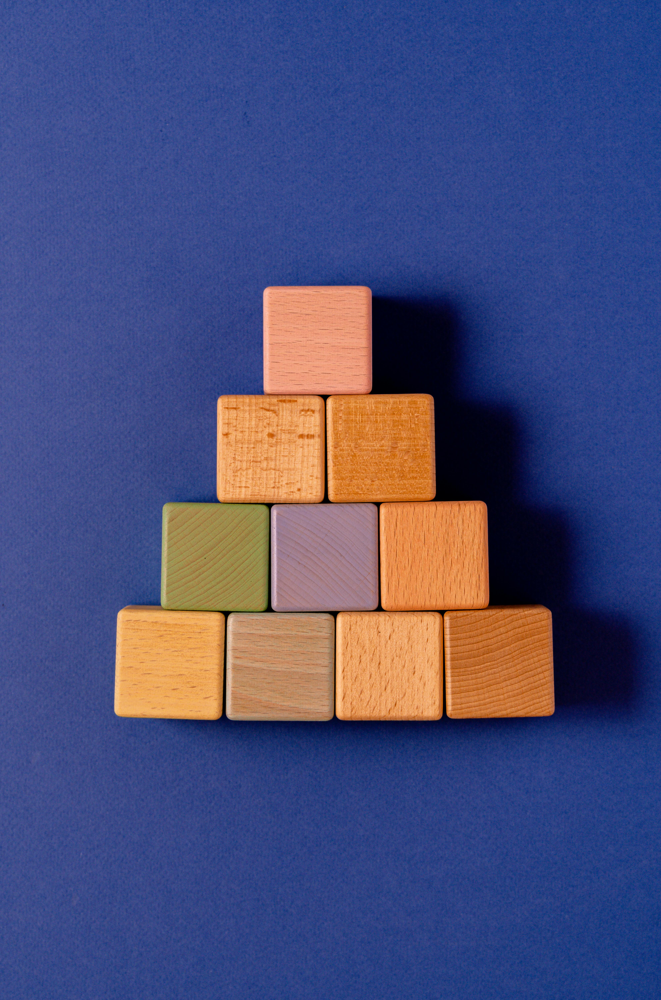

Welcome to the Site
This site is dedicated to Maria Montessori and the revolutionary philosophy she created. Here, you will find a variety of useful pages to explore.

This site is dedicated to Maria Montessori and the revolutionary philosophy she created. Here, you will find a variety of useful pages to explore.
This page offers insight into who Maria Montessori was—a visionary, reformer, feminist, and more. If you're looking for a comprehensive overview of her life and contributions, this is a great place to start. Like many others, I didn’t know much about her until recently, and I’ve included as much information as possible to provide a full picture of her remarkable legacy.
This page dives into the guiding principles of Montessori education. Here, you’ll find an in-depth look at what makes Montessori education unique. It includes a variety of key concepts that form the cornerstone of this educational philosophy.
Montessori education is built on three planes of development. This page focuses on the second plane, which covers ages 6–12. It explains the sensitive periods, human tendencies, and developmental characteristics associated with this stage.
Thank you for visiting this site. I hope it provides you with valuable information and inspires further exploration into Montessori education.